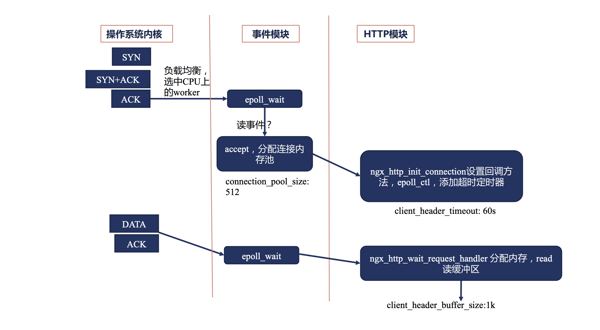
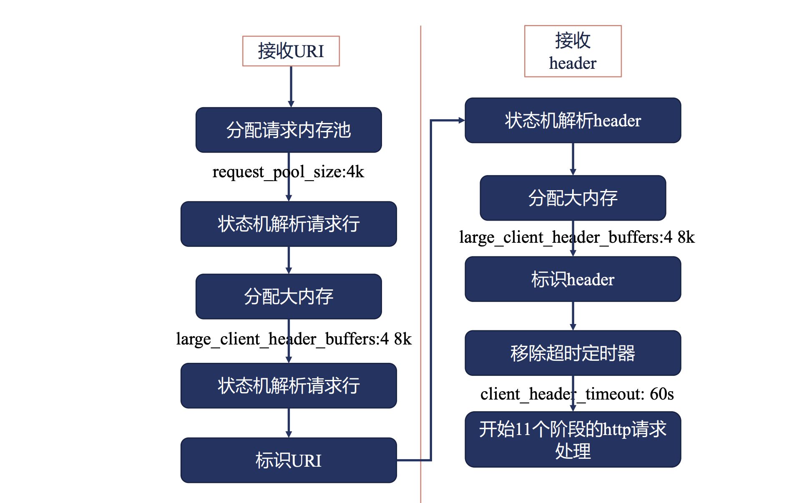
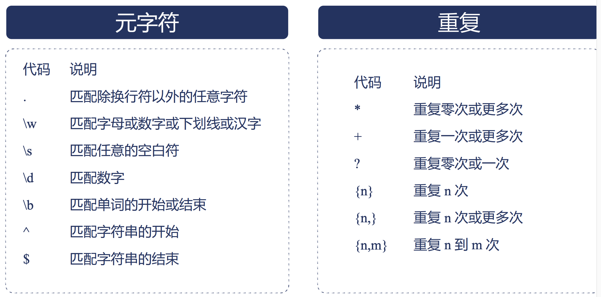
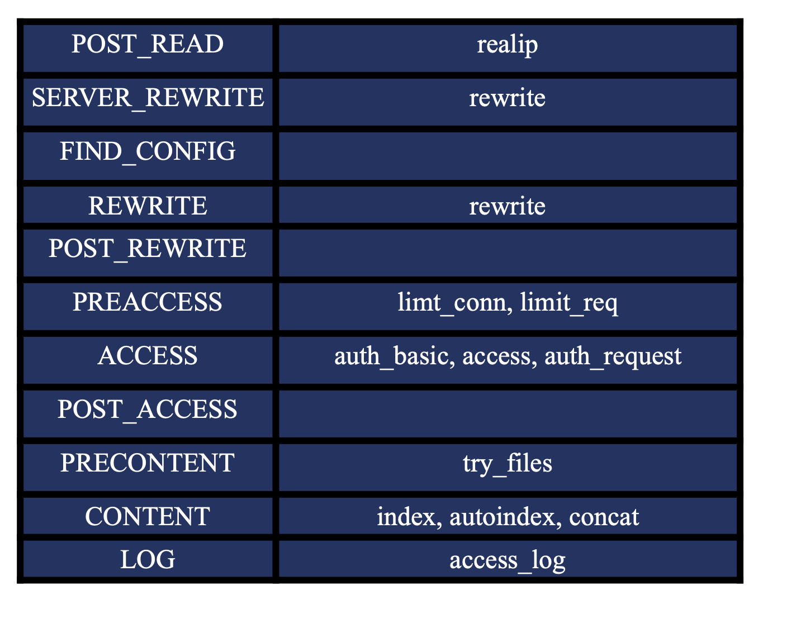
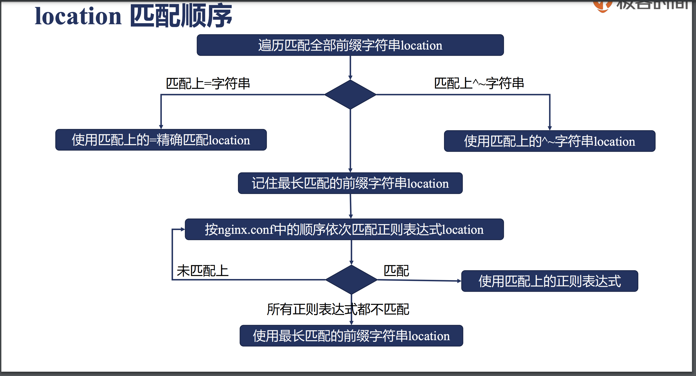
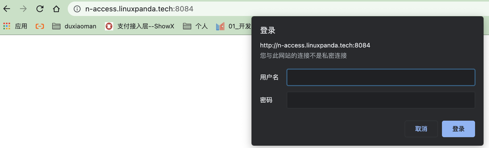
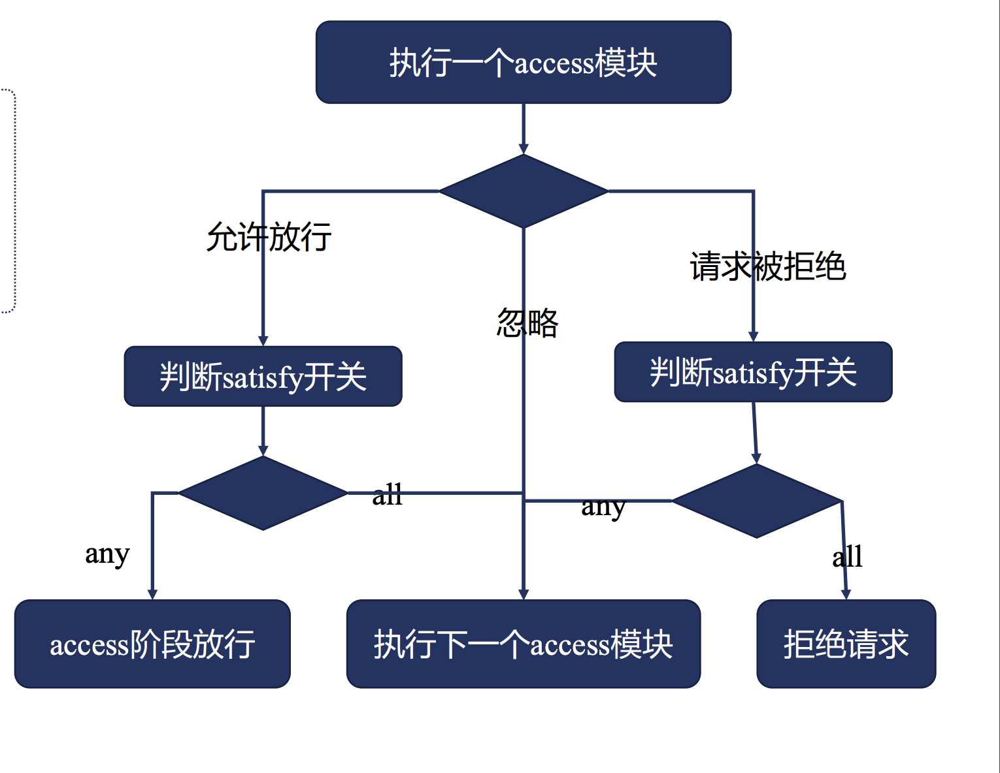
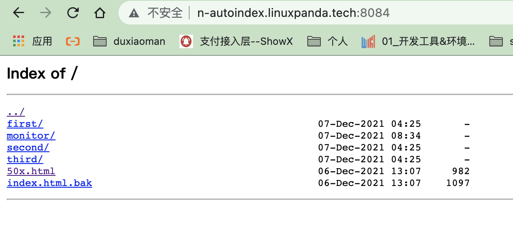
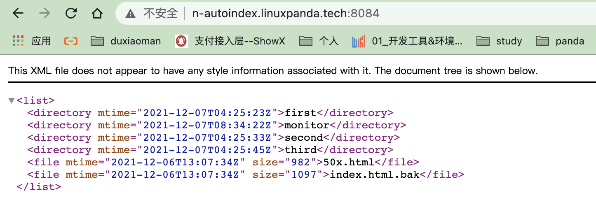
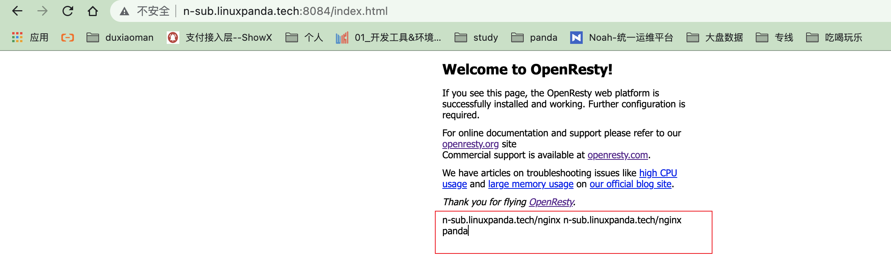

3. nginx的http模块
3.1. 配置块的嵌套情况
http {
upstream {}
map {}
geo {}
server {}
server{
if () {}
location {
}
location {
}
}
}
3.2. 指令的上下文
指令的上下文是控制指令在哪个地方生效。这里按照官方网站的介绍一个。
这个例子说明log_format这个指令只能在http的片段内进行配置。
3.3. 指令的合并
值指令： 可以合并，子类可以从父类获取值的。可以向上覆盖的。
动作类指令： 不可以合并。

3.4. listen 指令
参考： https://nginx.org/en/docs/http/ngx_http_core_module.html
这里提供几种listen方式
listen unix:/var/run/nginx.sock;
listen 127.0.0.1:8000;
listen 127.0.0.1;
listen 8000;
listen \*:8000;
listen [::]:8000 ipv6only=on;
listen [::1];
3.5. 接收请求事件模块
操作系统会完成三次握手的， nginx通过epoll_wait读取到握手完毕包， nginx开始分配连接池 connection_poll_size:512 , nginx的http模块会给这个请求读取设置一个超时时间 client_header_time:60s, 然后分配一个缓冲区来读取header信息， client_header_buffer_size=1k， 接下来nginx继续通过epoll_wait获取header信息，存储在这个buffer中。
3.6. 接收请求事件模块详细
接收请求是2个大的部分， 一个是请求头部分，一个是请求body部分。 这里先说下第一个部分。
http模块处理请求，会先分配内存池的request_poll_size:4k，会解析行的， 如果第一行数据比较大， 原来的client_header_buffer_size 是放不下的，需要分配大内存。 large_clent_header_buffers: 4 8k 的大小。 继续解析行。 解析好后，uri变量就有值了， 接下来继续获取header信息 。 这个和uri使用共同的buffer。
上面提到的几个参数重点这里说明下
client_header_buffer_size: 默认是1k的， 也就是默认1k,如果uri和header信息这个1k不够存储的话才会使用large_client_header_buffers指定的大小。
large_client_header_buffers: 默认4 8k， 如果8k能够存储下，那就只是用1个8k， 不够的话，2个，再不够就3个，但是最多使用4个8k的大小。如果超过4*8k大小那就返回414 url too large ,or 400.
client_header_timeout: 默认60s，如果60s内没有读取完毕，就响应408.
3.7. 正则表达式
nginx的正则是标准的posix正则， 这里简单说下。
nginx的正则也是支持捕获组的，也支持捕获组命名的。 样例如下
rewrite^/admin/website/solution/(\d+)/change/uploads/(.*)\.(?<ext>png|jpg|gif|jpeg|bmp)$ /static/uploads/$2/$3.$ext last;
3.8. server_name 指令
server_name 后面可以指定多个域名的， 第一个是主域名。 相关参数 server_name_in_redirect on表示在重定向的时候使用主域名而非用户访问过来的域名进行重定向。
补充说明:
server_name 的指定的特殊情况。 “” 表示匹配没有传递host头部的请求， _表示匹配所有。
server {
listen 8084;
server_name n-n1.linuxpanda.tech n-n2.linuxpanda.tech ;
server_name_in_redirect on;
return 302 /redirect;
}
测试下如下
# server_name_in_redirect on 的情况下 可以发现重定向的结果都是变成了主域名的host了。
curl http://n-n1.linuxpanda.tech:8084/ -IL
HTTP/1.1 302 Moved Temporarily
Server: openresty/1.19.9.1
Date: Mon, 06 Dec 2021 12:28:56 GMT
Content-Type: text/html
Content-Length: 151
Location: http://n-n1.linuxpanda.tech:8084/redirect
Connection: keep-alive
curl http://n-n2.linuxpanda.tech:8084/ -IL
HTTP/1.1 302 Moved Temporarily
Server: openresty/1.19.9.1
Date: Mon, 06 Dec 2021 12:29:44 GMT
Content-Type: text/html
Content-Length: 151
Location: http://n-n1.linuxpanda.tech:8084/redirect
Connection: keep-alive
3.9. 使用正则创建变量
server {
listen 8084;
server_name ~^(?<pre>.*).linuxpanda.tech$;
server_name_in_redirect on;
return 200 "$pre\n" ;
}
验证结果如下
[root@zhaojiedi-elk-2 conf]# curl http://n-n2.linuxpanda.tech:8084/
n-n2
[root@zhaojiedi-elk-2 conf]# curl http://n-n1.linuxpanda.tech:8084/
n-n1
3.10. server匹配顺序
精确匹配的
*在前的泛域名
*在后的泛域名
正则匹配的
default server
其中default server 是在listen指定default的，那就是default server ， 如果没有。 那就是nginx加载的第一个server为default server 。
3.11. nginx处理的11个阶段

post_read
server_rewrite
find_config
rewrite
post_rewrite
preaccess
access
post_access
precontent
content
log
3.12. 如何获取真实的用户ip地址。
用户访问到我们的服务，可能经过多层代理后到达的， 一般情况下通过这几种方式获取用户真实ip地址。
http头部的X-Real-IP用于传递用户的真实ip地址。
http头部的X-Forwarded-For用于传递代理等中间ip地址。 一般最后就是用户ip地址。
帮助文档： https://nginx.org/en/docs/http/ngx_http_realip_module.html
real_ip_header 这个默认值是X-Real-IP的
Note
这个模块默认是不会编译到nginx的， 需要启用才可以的。 –with-http_realip_module 方式启用。
server {
server_name n-realip.linuxpanda.tech;
error_log logs/n-realip-err.log debug;
set_real_ip_from 10.157.0.0/16;
set_real_ip_from 10.21.0.0/16;
#real_ip_header X-Real-IP;
#real_ip_recursive off;
real_ip_recursive on;
real_ip_header X-Forwarded-For;
location /{
return 200 "Client real ip: $remote_addr\n";
}
}
测试结果如下
# 可以看到，real_ip_recursive on 开启后， set_real_ip_from指定的地址不会识别为real ip 的， 找到最后一个才算
[root@zhaojiedi-elk-2 nginx]# curl http://n-realip.linuxpanda.tech -H "X-Forwarded-For: 1.1.1.1 2.2.2.2 10.157.1.2 10.157.1.3"
Client real ip: 2.2.2.2
[root@zhaojiedi-elk-2 nginx]# curl http://n-realip.linuxpanda.tech -H "X-Forwarded-For: 1.1.1.1 2.2.2.2 3.3.3.3 10.157.1.2 10.157.1.3"
Client real ip: 3.3.3.3
[root@zhaojiedi-elk-2 nginx]# curl http://n-realip.linuxpanda.tech -H "X-Forwarded-For: 10.157.1.2 10.157.1.3"
Client real ip: 10.157.1.2
# 可以看到，real_ip_recursive off 关闭后，只是简单的取最后一个的。
[root@zhaojiedi-elk-2 nginx]# curl http://n-realip.linuxpanda.tech -H "X-Forwarded-For: 1.1.1.1 2.2.2.2 3.3.3.3 10.157.1.2 10.157.1.3"
Client real ip: 10.157.1.3
3.13. 如果拿到用户的ip如何使用
nginx中可以通过变量访问到用户的真实ip地址。 remote_addr就是用户的ip地址。 有了这个用户ip可以做些限流等分流操作。
3.14. return 指令
这个指令结束后续处理，直接给用户响应一个code和一些内容。
官方参考： https://nginx.org/en/docs/http/ngx_http_rewrite_module.html
几种样例
return 404 "find nothing!"
return http://www.baidu.com
return 502
3.15. 验证return errorpage优先级
server {
listen 8084;
server_name n-return.linuxpanda.tech;
root html/;
error_page 404 /403.html;
location /{
return 404 "find nothing!\n";
}
return 405;
}
效果验证
# return 405; 关闭
[root@zhaojiedi-elk-2 sites]# curl http://n-return.linuxpanda.tech:8084/ -IL
HTTP/1.1 404 Not Found
Server: openresty/1.19.9.1
Date: Tue, 07 Dec 2021 02:47:12 GMT
Content-Type: application/octet-stream
Content-Length: 14
Connection: keep-alive
# return 405; 启用
[root@zhaojiedi-elk-2 sites]# curl http://n-return.linuxpanda.tech:8084/ -IL
HTTP/1.1 405 Not Allowed
Server: openresty/1.19.9.1
Date: Tue, 07 Dec 2021 02:48:12 GMT
Content-Type: text/html
Content-Length: 163
Connection: keep-alive
通过验证我们知道，
server种的return指令是高于location的， 和配置前后无关系的。
return就是直接返回了， 不会在经过errpage这些处理的。
3.16. error_page
error_page 用于给特定code的展示一个特定的错误页面。 url可以包含变量的。 适用于给用户友好提示。
官方参考： https://nginx.org/en/docs/http/ngx_http_core_module.html#error_page
几种样例配置
# 这种方式，会引发内部的重定向，请求对应的页面， 方法为get， 而不是请求的原始方法。
error_page 404 /404.html;
error_page 500 502 503 504 /5xx.html ;
# 使用 = 方式，可以改变响应码的。
error_page 404 =200 /empty.gif;
# 这个没有指定200 ，那就是跟进/404.php的返回码来定。
error_page 404 = /404.php;
# 下面的这个部分就是将404请求，转发给后端backend来响应
location / {
error_page 404 =@fallback;
}
location @fallback {
proxy_pass http://backend ;
}
# 使用url的方式， 默认是响应码是302的， 当然可以指定其他的 301， 302 303 307 308 只能这几个。 第二个404=301 就是指定方式。
error_page 403 http://www.linuxpanda.tech/forbidden.html;
error_page 404=301 http://www.linuxpanda.tech/notfound.html;
3.17. rewrite指令
这个指令的功能是将指定的url替换为新的url。 支持正则表达式提取的。
当replacement以http:// 或者https://或者$schema开头， 则直接返回302重定向。
替换后的url跟进flag指定的方式进行处理。
last 这个url接下来使用新的location进行匹配。
break 停止执行。
redirect 返回302 。
permanent 返回301 。
先准备下环境
[root@zhaojiedi-elk-2 sites]# mkdir ../../html/{first,second,third}
[root@zhaojiedi-elk-2 sites]# echo "1" >> ../../html/first/1.txt
[root@zhaojiedi-elk-2 sites]# echo "2" >> ../../html/second/2.txt
[root@zhaojiedi-elk-2 sites]# echo "3" >> ../../html/third/3.txt
[root@zhaojiedi-elk-2 sites]# tree ../../html/
../../html/
├── 50x.html
├── first
│ └── 1.txt
├── index.html
├── second
│ └── 2.txt
└── third
└── 3.txt
对应配置如下
server {
listen 8084 ;
server_name n-rewrite.linuxpanda.tech;
rewrite_log on;
error_log logs/rewrite_error.log notice;
root html/;
location /first {
rewrite /first(.*) /second$1 last;
return 200 'first!\n';
#rewrite /first(.*) /second$1 last;
}
location /second {
rewrite /second(.*) /third$1 break;
#rewrite /second(.*) /third$1;
return 200 'second!\n';
}
location /third {
return 200 'third!\n';
}
location /redirect1 {
rewrite /redirect1(.*) $1 permanent;
}
location /redirect2 {
rewrite /redirect2(.*) $1 redirect;
}
location /redirect3 {
rewrite /redirect3(.*) http://n-rewrite.linuxpanda.tech$1;
}
location /redirect4 {
rewrite /redirect4(.*) http://n-rewrite.linuxpanda.tech$1 permanent;
}
}
验证结果
# 可以看到这个url直接命中了location片段， 就return了。
[root@zhaojiedi-elk-2 sites]# curl http://n-rewrite.linuxpanda.tech:8084/third/3.txt
third!
# 访问这个url命中了/second的location， 然后被break了， 后面return没有机会执行了， 然后直接content了， html/3.txt进行相应了。
[root@zhaojiedi-elk-2 sites]# curl http://n-rewrite.linuxpanda.tech:8084/second/3.txt
3
# 使用last会继续进行location的， 然后走第二个，然后和上面的案例一样了。
[root@zhaojiedi-elk-2 sites]# curl http://n-rewrite.linuxpanda.tech:8084/first/3.txt
3
# 然后进行调整rewrite和return的顺序， 在进行测试
[root@zhaojiedi-elk-2 sites]# curl http://n-rewrite.linuxpanda.tech:8084/first/3.txt
first!
# 测试第一个重定向。
[root@zhaojiedi-elk-2 sites]# curl http://n-rewrite.linuxpanda.tech:8084/redirect1/1.txt -IL
HTTP/1.1 301 Moved Permanently
Server: openresty/1.19.9.1
Date: Tue, 07 Dec 2021 04:45:17 GMT
Content-Type: text/html
Content-Length: 175
Location: http://n-rewrite.linuxpanda.tech:8084/1.txt
Connection: keep-alive
HTTP/1.1 404 Not Found
Server: openresty/1.19.9.1
Date: Tue, 07 Dec 2021 04:45:17 GMT
Content-Type: text/html
Content-Length: 159
Connection: keep-alive
[root@zhaojiedi-elk-2 sites]# curl http://n-rewrite.linuxpanda.tech:8084/redirect2/2.txt -IL
HTTP/1.1 302 Moved Temporarily
Server: openresty/1.19.9.1
Date: Tue, 07 Dec 2021 04:45:59 GMT
Content-Type: text/html
Content-Length: 151
Location: http://n-rewrite.linuxpanda.tech:8084/2.txt
Connection: keep-alive
HTTP/1.1 404 Not Found
Server: openresty/1.19.9.1
Date: Tue, 07 Dec 2021 04:45:59 GMT
Content-Type: text/html
Content-Length: 159
Connection: keep-alive
# 测试重定向一个url的。默认是302临时重定向的。
[root@zhaojiedi-elk-2 sites]# curl http://n-rewrite.linuxpanda.tech:8084/redirect3/3.txt -IL
HTTP/1.1 302 Moved Temporarily
Server: openresty/1.19.9.1
Date: Tue, 07 Dec 2021 04:46:35 GMT
Content-Type: text/html
Content-Length: 151
Connection: keep-alive
Location: http://n-rewrite.linuxpanda.tech/3.txt
curl: (7) Failed connect to n-rewrite.linuxpanda.tech:80; Connection refused
# 重定向4
[root@zhaojiedi-elk-2 sites]# curl http://n-rewrite.linuxpanda.tech:8084/redirect4/4.txt -IL
HTTP/1.1 301 Moved Permanently
Server: openresty/1.19.9.1
Date: Tue, 07 Dec 2021 04:47:40 GMT
Content-Type: text/html
Content-Length: 175
Connection: keep-alive
Location: http://n-rewrite.linuxpanda.tech/4.txt
curl: (7) Failed connect to n-rewrite.linuxpanda.tech:80; Connection refused
可以看出：
rewrite 和return的指令优先级基本一致， 谁在前谁先生效。
permanent 是301， last这是302的，默认也是302的重定向。
break这个会跳过执行，然后执行content阶段的。
last这个会继续回头进行匹配location的。 内部重定向的，
3.18. rewrite 行为记录error日志
通过rewrite_log on即可启用的，
3.19. if指令
if指令使用在server或者location中的。
# 匹配ie浏览器
if ($http_user_agent ~ MSIE) {
rewrite ^(.*)$ /msie/$1 break;
}
# 提取cooke部分作为变量
if ($http_cookie ~* "id=([^;]+)(?:;|$)") {
set $id $1;
}
# 判定请求方法
if ($request_method = POST) {
return 405;
}
# 判定变量，进行速度限制
if ($slow) {
limit_rate 10k;
}
# 无效refer 给返回403
if ($invalid_referer) {
return 403;
}
3.20. location指令
官方参考： https://nginx.org/en/docs/http/ngx_http_core_module.html#location
精确匹配优先
^~禁用正则次之
最长正则
最长匹配前缀
3.21. 如何限制每个客户端的并发连接数量
每个请求是通过worker处理， 各个work之间怎么知道别人多少流量呢。 这个时候需要引入共享内存， 全部woker进程都是可以访问这个共享内存的。 一般限制通过用户的ip来控制的。
官方文档： https://nginx.org/en/docs/http/ngx_http_limit_conn_module.html
样例配置
limit_conn_zone $binary_remote_addr zone=addr:10m;
limit_req_zone $binary_remote_addr zone=one:10m rate=2r/m;
server {
listen 8084;
server_name n-limit.linuxpanda.tech;
root html/;
error_log logs/myerror.log info;
location /{
limit_conn_status 500;
limit_conn_log_level warn;
limit_rate 50;
limit_conn addr 1;
#limit_req zone=one burst=3 nodelay;
#limit_req zone=one;
}
}
验证效果
# 第一次请求，
curl http://n-limit.linuxpanda.tech:8084/
# 换个终端继续请求一次。 这次就是500了， 因为我们设置了limit_conn_status 500
[root@zhaojiedi-elk-2 sites]# curl http://n-limit.linuxpanda.tech:8084/
<html>
<head><title>500 Internal Server Error</title></head>
<body>
<center><h1>500 Internal Server Error</h1></center>
<hr><center>openresty/1.19.9.1</center>
</body>
</html>
# 看到日志， 已经被拒绝记录日志了。
tail -f ../../logs/myerror.log
2021/12/07 15:58:08 [warn] 41823#0: *24 limiting connections by zone "addr", client: 10.157.89.215, server: n-limit.linuxpanda.tech, request: "GET / HTTP/1.1", host: "n-limit.linuxpanda.tech:8084"
几个参数说明
limit_conn_zone： 定义一个zone 涉及名字，key 和大小。
limit_conn： 限制并发数。
limit_conn_log_level： 限流的级别，
limit_conn_status： 命中限流的指定状态码，默认是503的。
3.22. 如何限制每个客户端的每秒处理请求数量
官方文档： https://nginx.org/en/docs/http/ngx_http_limit_req_module.html
几个参数说明
limit_req_zone： 定义一个zone 涉及名字，key 和限制速率。
limit_req： 限制并发数，burst=0默认 nodelay将直接返回不仅进入池子。
limit_req_log_level： 限流的级别，
limit_req_status： 命中限流的指定状态码，默认是503的。
3.23. limit_req 和limit_conn 区别
这个主要涉及conn和req的区别了， conn是表示一个连接， 三次捂手四次断开， 中间是可以发送多个req的。
发了多个请求但是conn还是1的。
所有连接限制limit_conn ，请求限制limit_req .
3.24. 如何限制哪些ip地址的访问权限
有时候我们只希望特定的接口只能被内网访问，或者特定的来源ip访问，其他的访问都要拒绝怎么办？
官方文档： https://nginx.org/en/docs/stream/ngx_stream_access_module.html
access模块提供allow deny 命令来控制访问的。
样例配置
server {
listen 8084;
server_name n-access.linuxpanda.tech;
root html/;
location /{
}
location /monitor {
allow 10.21.0.0/16;
deny all ;
#return 200 "monitor" ;
}
}
验证
# 10.157访问就是403的。
[root@zhaojiedi-elk-2 conf]# curl http://n-access.linuxpanda.tech:8084/monitor
<html>
<head><title>403 Forbidden</title></head>
<body>
<center><h1>403 Forbidden</h1></center>
<hr><center>openresty/1.19.9.1</center>
</body>
</html>
# 10.21网段机器验证下
[zhaojiedi_dxm@instance-yzjf9ek0-07 ~]$ curl http://n-access.linuxpanda.tech:8084/monitor -L
monitor.index
3.25. http base authentication
auth_basic 设置了认证的， 只有通过输入用户名和密码，校验正确才可以放到到后面的真实内容。
官方文档： https://nginx.org/en/docs/http/ngx_http_auth_basic_module.html
主要指令说明
auth_basic： 这个是弹出一个认证页面的时候，上面的title信息。
auth_basic_user_file ： 指定一个密码文件， 用于核对用户的登录信息的。
这里说明下如何创建一个密码文件。
yum install httpd-tools
[root@zhaojiedi-elk-2 yum.repos.d]# htpasswd -b -c /root/openresty/nginx/conf/sites/passwd panda panda
Adding password for user panda
[root@zhaojiedi-elk-2 yum.repos.d]# cat /root/openresty/nginx/conf/sites/passwd
panda:$apr1$uG5p/wXQ$ZVip2iJlcBIgcQCS9Z48o0
# 第二种生成方式
[root@zhaojiedi-elk-2 yum.repos.d]# openssl passwd -apr1 -salt uG5p
Password:
$apr1$uG5p$HmDGUeTQSY/vpUKghwght1
配置如下
server {
listen 8084;
server_name n-access.linuxpanda.tech;
root html/;
location /{
auth_basic "what ?" ;
auth_basic_user_file conf/passwd ;
}
}
验证效果
3.26. 统一的用户权限验证系统auth_request
auth_request对应的路由返回401 or 403时，会拦截请求直接nginx返回前台401 or 403信息；
auth_request对应的路由返回2xx状态码时，不会拦截请求，而是构建一个subrequest请求再去请求真实受保护资源的接口；
auth_request模式没有编译进入nginx的。
样例配置如下
upstream web1 {
server 192.168.20.131:3000;
}
upstream web2 {
server 192.168.20.131:3001;
}
server {
listen 8084;
server_name n-access.linuxpanda.tech;
location /api/web1 {
auth_request /auth;
error_page 401 = @error401;
auth_request_set $user $upstream_http_x_forwarded_user;
proxy_set_header X-Forwarded-User $user;
proxy_pass http://web1;
}
location /api/web2 {
auth_request /auth;
error_page 401 = @error401;
auth_request_set $user $upstream_http_x_forwarded_user;
proxy_set_header X-Forwarded-User $user;
proxy_pass http://web2;
}
location /auth {
internal;
proxy_set_header Host $host;
proxy_pass_request_body off;
proxy_set_header Content-Length "";
proxy_pass http://192.168.20.131:7001/auth;
}
location @error401 {
add_header Set-Cookie "NSREDIRECT=$scheme://$http_host$request_uri;Path=/";
return 302 http://192.168.20.131:7001/login;
}
}
3.27. 限制所有access阶段的satisfy指令
上面我有有allow deny 控制ip来源， 还有auth提供用户名和密码的， 还有统一认证等。 是所有都通过放行，还是一个满足就可以放行了呢。 通过satisfy指令即可实现。
这个条件判定如果一个判定能决定结果的话，后续的判定就不做了。
access
auth_basic
auth_request
3.28. precontent 阶段的try_files
依次访问多个url对应的文件，那就存着的时候直接返回内容，如果不存在则按照最后一个url响应。
一个样例 .. code-block:: bash
- try_files /system/maintenance.html
$uri $uri/index.html $uri.html @mongrel;
3.29. 实时流量mirror 模块
处理请求时候，生成子请求访问其他服务，对子请求的返回值不做处理。 通过mirror uri 方式将流量转发给一个uri 。
3.30. root和alias指令差异
root会将完成url映射近文件路径中，alias只会讲location后的url映射到文件路径中。
样例配置如下
server {
listen 8084;
server_name n-alias.linuxpanda.tech;
location /root {
root html ;
}
location /alias {
alias html;
}
location ~ /root/(\w+\.txt) {
root html/first/$1;
}
location ~ /alias/(\w+\.txt) {
alias html/first/$1;
}
}
测试效果
# 可以看到这个请求命中了第一个location了， 实际找的文件是 nginx基础目录/root/openresty/nginx + root指定位置html + 请求的路径/root
curl http://n-alias.linuxpanda.tech:8084/root
[root@zhaojiedi-elk-2 conf]# tail -n1 ../logs/access.log
10.157.89.215 - - [07/Dec/2021:19:24:24 +0800] "GET /root HTTP/1.1" 404 159 "-" "curl/7.29.0" "-"request_filename=/root/openresty/nginx/html/root document_root=/root/openresty/nginx/html realpath_root=/root/openresty/nginx/html
#实际找的文件是 nginx基础目录/root/openresty/nginx + root指定位置html/first/1.txt + 请求的路径/root/1.txt
[root@zhaojiedi-elk-2 conf]# curl http://n-alias.linuxpanda.tech:8084/root/1.txt
<html>
<head><title>404 Not Found</title></head>
<body>
<center><h1>404 Not Found</h1></center>
<hr><center>openresty/1.19.9.1</center>
</body>
</html>
[root@zhaojiedi-elk-2 conf]# tail -n1 ../logs/access.log
t/openresty/nginx/html/first/1.txt
# 命中了第二个location 访问的路径其实是 nginx基础目录/root/openresty/nginx + alias执行路径 html
curl http://n-alias.linuxpanda.tech:8084/alias
[root@zhaojiedi-elk-2 nginx]# tail -n 1 logs/access.log
10.157.89.215 - - [07/Dec/2021:20:27:20 +0800] "GET /alias HTTP/1.1" 301 175 "-" "curl/7.29.0" "-"request_filename=/root/openresty/nginx/html document_root=/root/openresty/nginx/html realpath_root=/root/openresty/nginx/html
# nginx基础目录/root/openresty/nginx + alias执行路径 html/first/a.txt
[root@zhaojiedi-elk-2 nginx]# curl http://n-alias.linuxpanda.tech:8084/alias/a.txt
[root@zhaojiedi-elk-2 nginx]# tail -n 1 logs/access.log
10.157.89.215 - - [07/Dec/2021:20:31:01 +0800] "GET /alias/a.txt HTTP/1.1" 404 159 "-" "curl/7.29.0" "-"request_filename=/root/openresty/nginx/html/first/a.txt document_root=/root/openresty/nginx/html/first/a.txt realpath_root=-
综合上面的实现发现， alias和root主要是针对的请求的uri部分是否追加到原来的访问路径上面的， alias不追加， 但是root是追加的。
额外几个变量的含义
request_filename: 带访问文件的完整的路径
document_root: 对应的访问根
realpath_root: 软连接换成真实路径。
3.31. 静态文件返回的content-type
default_type 指定默认的响应类型。 log_not_found on 这是默认值， 会在访问文件不存在的时候打印对应的错误日志，可以关闭。但是不建议。
3.32. index模块
index 模块提供指定访问目录时候的默认请求文件。 默认值是index.html
3.33. auto index 模块
访问一个url的时候，通过html或者其他类型返回对应目录的目录的结构信息。
几个主要参数含义：
autoindex : 开启auto index
autoindex_exact_size: 对于html格式，指定是否输出目录列表输出准确的文件大小。
autoindex_format: 响应格式，默认是html的格式的。
autoindex_localtime: 日期的本地时间。
样例配置如下
server{
listen 8084;
server_name n-autoindex.linuxpanda.tech;
location / {
alias html/ ;
autoindex on ;
autoindex_exact_size off ;
autoindex_format xml;
}
}
设置为html的效果
设置为xml的效果
3.34. log阶段
log模块是将http请求相关信息记录到日志中，无法被禁用。
官方文档： https://nginx.org/en/docs/http/ngx_http_log_module.html
使用样例
log_format main '$remote_addr - $remote_user [$time_local] "$request" '
'$status $body_bytes_sent "$http_referer" '
'"$http_user_agent" "$http_x_forwarded_for"'
'request_filename=$request_filename document_root=$document_root realpath_root=$realpath_root ';
access_log logs/access.log main;
# access_log /path/to/log.gz combined gzip flush=5m;
3.35. 替换响应中的字符串
通过sub模块提供的，完成对响应的内容进行替换，支持变量方式。 默认是没有编译进来nginx的。
官方文档： https://nginx.org/en/docs/http/ngx_http_sub_module.html
主要参数说明
sub_filter: 替换命令
sub_filter_once： 只替换一次
sub_filter_last_modified： 是否展示Last-Modified响应头， 默认是off的，也就是这个header被移除的。
sub_filter_types: 哪些类型文件才替换，默认是html，*表示所有类型。
样例配置如下
server {
listen 8084;
server_name n-sub.linuxpanda.tech;
location / {
alias html/ ;
sub_filter 'Nginx.oRg' '$host/nginx';
sub_filter 'zhaojiedi' 'panda';
#sub_filter_once on;
sub_filter_once off;
#sub_filter_last_modified off;
sub_filter_last_modified on;
}
}
测试效果图如下
可以看到对响应的content进行了替换工作。
3.36. 在相应的前后添加内容
这个ngx_http_addition_filter_module模块是给响应内容添加特定的内容的， 默认是未编译到nginx的。
官方文档： https://nginx.org/en/docs/http/ngx_http_addition_module.html
主要参数含义：
add_before_body： 之前添加的
add_after_body： 之后添加的。
addition_types： 哪些类型才添加内容。
server {
listen 8084;
server_name n-addition.linuxpanda.tech;
location / {
add_before_body /before_action;
add_after_body /after_action;
addition_types *;
}
location /before_action {
return 200 'new content before\n';
}
location /after_action {
return 200 'new content after\n';
}
}
验证效果
[root@zhaojiedi-elk-2 nginx]# curl http://n-addition.linuxpanda.tech:8084/
new content before
......
......
Nginx.oRg Nginx.oRg zhaojiedi
new content after
3.37. 变量的惰性求值
变量使用的时候才求值，变量的值可能随时都变化，其值为当时使用的那一刻值。
3.38. http框架使用的常用变量
3.38.1. http请求相关的变量
arg_参数名： url中某个具体的参数值
query_string: args变量完全相同
args: 全部url参数
is_args: 如果url中有参数则返回，如果无就是空。
content_length: 请求中的Content_Length头部的值
content_type: 标识请求包体类型的content_Type头部的值。
uri: 请求的uri 不包括后面的参数的。
document_uri: 通uri
request_uri: 包含uri及其后面的参数。
scheme： 协议名字
request_method: 请求方法
request_length: 请求内容的大小，包括请求行，头部，包体。
remote_user: base auth 传递的用户名。
request_body: 请求包体，使用代理才生效。
request: 含有方法，请求uri 协议信息， 请求的第一行。
host: 请求行提取，如果有host header指定，那就替换， 如果都没有，使用匹配的server_name替换。
http_host: host header
http_user_agent: agent header
http_referer: referer header
http_via: via header
http_x_forwarded_for: x_forwared_for header
http_cookie: cookie header
3.38.2. tcp连接相关的变量
binary_remote_addr: 客户端地址
connection: 递增的连接序号
connection_requests: 当前连接上执行过的请求数。
remote_addr: 客户端地址
remote_port: 客户端端口
proxy_protocal_addr: 返回proxy_protocol协议中的地址。
proxy_protocol_port: 返回proxy_protocol协议中的端口。
server_addr: 服务器端地址
server_port: 服务器端端口
TCP_INFO: tcp 内核参数
server_protocol: 服务器端协议。
3.38.3. nginx处理请求过程中产生的变量
request_time : 请求处理到现在的耗时
server_name: 匹配的server_name
https： 是否开启https
request_compltion: 请求是否处理完毕。
request_id: 请求id
request_filename: 待访问的文件完整路径
document_root: 由root alias 规则生成的访问root
realpath_root: document_root路径（如果是软连的）换成真实路径。
limit_rate： 返回客户端的响应速度上限。 set设置即可。
这里演示下limit_rate 的效果。
配置如下
server {
listen 8084;
server_name n-limit-rate.linuxpanda.tech;
root html/;
location /{
limit_rate 50;
}
}
测试如下
time curl http://n-limit-rate.linuxpanda.tech:8084/ -L
time curl http://n-limit-rate.linuxpanda.tech:8084/ -L
real 0m27.087s
user 0m0.002s
sys 0m0.008s
看到启用了limit_rate后， 速度明显受限了。
3.38.4. 发送http响应时相关的变量
body_bytes_send: 响应body包体的长度
bytes_send: 全部http响应的长度
status: http响应的返回码
sent_trailer_名字： 把响应结尾内容里值返回。
3.38.5. nginx系统变量
time_local: 本地时间
time_iso8601: iso8601标准时间。
nginx_version: 版本
pid: work pid
pipe: 如果使用管道返回p
hostname: 服务器的主机名字。
3.38.6. referer模块
referer模块记录访问的url的来源url地址的， 可以通过这个模块来拒绝非正常的网络访问我们站点的资源。
相关参数
valid_referers: 控制那些是有效的refer
referer_hash_bucket_size: referhash大小
refer_hash_max_size: 最大hash个数。
valid_referers 几个参数说明
none: 允许缺失referer头部的请求访问。没有key的
block: 允许referer头部没有对应值的请求访问。没有value的。
server_name: 如果refer和server中的本机域名某个匹配则允许请求访问。
正则： 如果满足正则表示匹配
字符串： 如果包含特定字符串满足。
如果有效， 会生成一个变量 invalid_referer变量=1 ，否则=0。
配置如下
server {
listen 8084;
server_name n-referer.linuxpanda.tech;
location / {
alias html/ ;
valid_referers none blocked server_names
*.linuxpanda.pub www.linuxpanda.cn/nginx/
~\.google\.;
if ($invalid_referer) {
return 403;
}
return 200 'valid\n';
}
}
测试效果
[root@zhaojiedi-elk-2 conf]# curl http://n-referer.linuxpanda.tech:8084/
valid
[root@zhaojiedi-elk-2 conf]# curl http://n-referer.linuxpanda.tech:8084/ -H "Referer: "
valid
[root@zhaojiedi-elk-2 conf]# curl http://n-referer.linuxpanda.tech:8084/ -H "Referer: http://abc.com" -I
HTTP/1.1 403 Forbidden
Server: openresty/1.19.9.1 (no pool)
Date: Tue, 14 Dec 2021 13:56:26 GMT
Content-Type: text/html
Content-Length: 169
Connection: keep-alive
[root@zhaojiedi-elk-2 conf]# curl http://n-referer.linuxpanda.tech:8084/ -H "Referer: http://www.google.com" -I
HTTP/1.1 200 OK
Server: openresty/1.19.9.1 (no pool)
Date: Tue, 14 Dec 2021 13:56:52 GMT
Content-Type: application/octet-stream
Content-Length: 6
Connection: keep-alive
3.39. secure_link模块
这个模块可以通过某服务器生成加密的安全连接url返回给客户端， 客户端使用安全的url, nginx通过secure_link变量判断是否验证通过。
几个变量说明
secure_link: 指定请求中的md5，请求中的过期时间。
secure_link_md5: 计算md5使用那些顺序组合
secure_link_secret: 秘钥单词。
校验结果说明secure_link
值为空的： 验证不通过
值为0： url过期
值为1： 验证通过
3.40. map指令
map的能力更像其他语言的switch功能， 通过case 1 case 2 命中不同的case 设置不同的变量， 方便后续的模块使用变量的。
map $http_host $name {
hostnames;
default 0;
~map\.tao\w+\.org.cn 1;
\*.linuxpanda.org.cn 2;
map.linuxpanda.tech 3;
map.linuxpanda.* 4 ;
}
和其他的语言的switch case不一样， 一个一个按照顺序去匹配， 这个匹配顺序是这样的。
字符串严格匹配
使用hostnames可以对域名前缀*泛域名匹配。
~和~* 正则表达式匹配
都不的话， 使用default指令的配置。
3.41. split_clients模块
基于已有的变量创建新的变量，为其他ab测试提供更多的可能性。
split_clients "${http_testcli}" $variant {
0.51% .one;
20% .two;
50% .three;
* "",
}
3.42. geo模块
根据ip地址创建新的变量。 格式geo $adress $variable {}
匹配优先最长匹配
通过ip地址或者子网掩码的方式，如果ip在范围内，使用其后的值。
default是没有命中的时候，兜底的默认值。
include: 优化可读性
delete 删除指定的网络。
3.43. geoip模块基于maxmind数据库获取
需要安装c开发库， 编译启用geoip 然后配置nginx 。 详细操作如下
geo_city主要变量说明
geoip_country_code: 国家编码2字母
geoip_country_code3: 国安编码3字母
geoip_country_name: 国家名字
geo_city提供的变量如下
geoip_latitude: 维度
geoip_longitude: 经度
geoip_city_continent_code: 属于全球哪个大洲
geoip_region 州或者省编码
geoip_region_name: 名称，比如zhejiang
geoip_city: 城市名字
geoip_postal_code: 邮编号
3.44. 对客户端keepalive行为控制的指令
多个http请求通过复用tcp连接实现以下功能。
减少握手次数
通过减少并发连接数减少服务器的资源消耗。
降低tcp拥堵控制影响。
常见的header说明
connection: close: 表示不使用keepalive
connection: keepalive: 启用keepalive.
keep-alive: timeout=n: 表示keep alive保留的时间是多少秒。
主要指令说明
keepalive_disable: 哪个浏览器禁用，默认是msie6 .
keepalive_request : 同一个连接做多使用的请求数量。
keepalive_timeout: 超时时间。